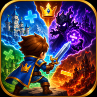

Profil
Statistik
Progres Empat Operasi
Perbandingan Tes Awal
Riwayat 30 Hari
Peta Hitungan
Lencana
Download Game

Pasang di perangkatmu
Main tanpa buka browser -- ikon game muncul di layar utama/desktop.